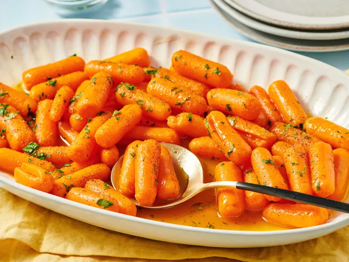

Maple Glazed Carrots Recipe!
Ingredients:
- 1/2 Pounds of Baby Carrots
- 1/4 Cups of Butter
- 1/3 Cups of Maple Syrup
- Salt and Ground Black Pepper
- Freshly Chopped Parsley
Directions:
- Gather All Ingredients
- Place carrots into a pot and cover with salted water; bring to a boil. Reduce heat to medium-low and simmer until tender, 15 to 20 minutes.
- Drain and transfer carrots to a serving bowl.
- Melt butter in a saucepan over medium-low heat. Stir maple syrup into melted butter and cook until warmed, 1 to 2 minutes.
- Pour over carrots and toss to coat; season with salt and ground black pepper.
If everything goes right, you should be met with this:

This recipe was taken from Allrecipe!
Go back to the Main Page!